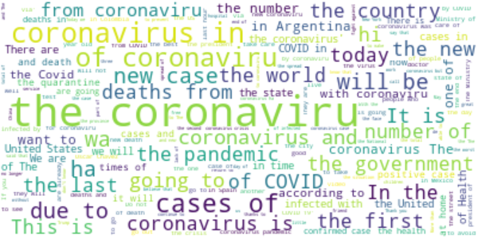
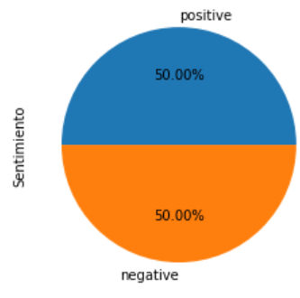
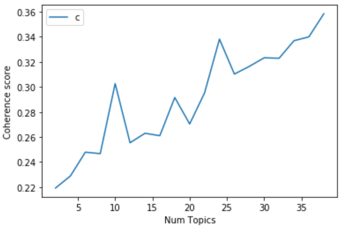
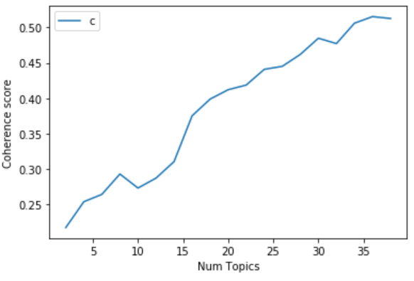
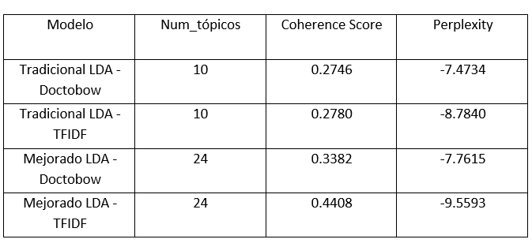
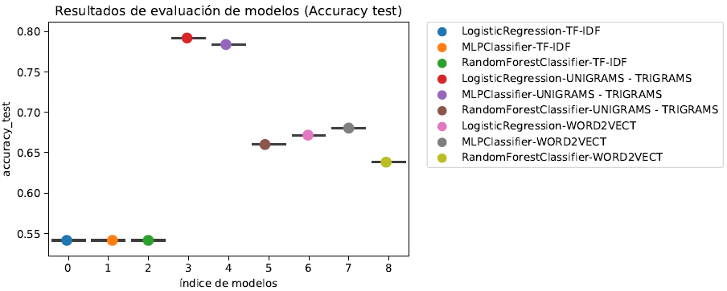
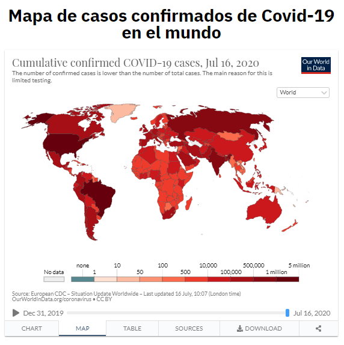
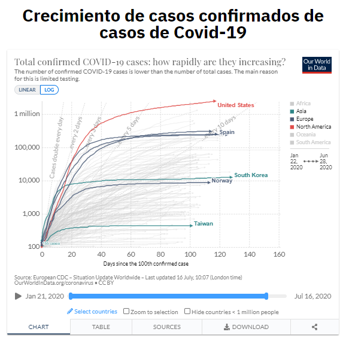
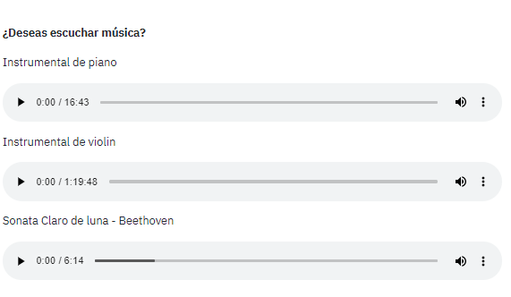

Visualizar artículo completo
Ir al sistema de detección de tópicos y análisis de sentimientos
Abstract
El presente documento consistio en desarrollar un modelo de LDA para realizar la deteccion de t ´ opicos y un modelo de analisis de sentimiento para poder clasificar tweets extra´ıdos usando keywords relacionados al Covid-19. Para lograr lo anterior, se dividio el trabajo en dos fases. En la primera fase, se construyo el modelo de LDA, en donde se hizo una comparacion de dos modelos de LDA (usando Doc2bow y TF-IDF) de tal modo que el mejor modelo de LDA fue aplicando TF-IDF para lo que se uso una cantidad de topicos igual a 24, con un Coherence Score de 0.4408 y Perplexity de -9.5593.La fase 2 consistio en crear un modelo de machine learning, uno de deep learning y uno que combine los 2 anteriores. Para escoger el mejor modelo de machine learning, se compararon 3 modelos diferentes(Regresion Logıística, RandomForest y una Red Neuronal). Ademas, se construyeron estos modelos utilizando 3 tecnicas de extracción de caracterıísticas diferentes (TF-IDF,N-GRAMS y Word2vect). El mejor modelo por cada tipo de tecnica fue RandomForest usando TF-IDF con un accuracy de 54%, Log´ıstica con N-GRAMS con un Accuracy de 79% y Red Neuronal con Word2vect con un accuracy de 68%. El mejor modelo de los 3 mejores, fue la Regresion Logıstica con TF-IDF. El mejor modelo de machine learning fue utilizando Regresion Logística con N-GRAMS con un Accuracy de 79%. Para construir los modelos de Deep learning se realizaron 3 tipos de pipelines : modelos de deep learning con word embeddings pre-entrenados o sin entrenar, modelos de deep learning multicanal y modelos de deep learning con machine learnig usando tecnicas de voting y average. El mejor modelo de deep learning fue el que tenia el embedding Glove obteniendo un resultado comparable a los modelos multicanal.Por otro lado, el mejor mmodelos multicanal fue un modelo con un optimizador RSMprop, 100 epocas, 3 diferentes tipos de filtros de diferentes tamanos y una capa de 100 unidades de LSTM. Finalmente, se construyo un sistema usando StreamLit y Heroku en donde se introdujo el mejor modelo de LDA Y de analisis de sentimiento para poder introducir un Tweet en tiempo real y saber el topico al cual pertenece y el sentimiento que posee. Ademas, se introdujeron gr ´ aficos en tiempo real que muestra la situacion actual de los casos de infectados y fallecidos por Covid- 19 en el mundo. Index Terms—Covid-19, LDA, Sentiment Analysis, Text Mining, Coronavirus
Introducción
En estos tiempos, alrededor del mundo se están viviendo momentos difíciles por el surgimiento del nuevo coronavirus conocido como Covid-19. Este virus letal surgido en china en diciembre del 2019 tiene a las personas viviendo con un profundo temor hacia esta nueva enfermedad dado que cada día se incrementan el número de contagiados y fallecidos por esta enfermedad. Como medida de prevensión, muchos gobiernos han tomado medidas drásticas con el objetivo de prevenir la propagación de esta enfermedad. Una de las medidas optadas por los países ha sido una cuarententa total con el objetivo de poder disminuir el transito de personas y así evitar la propagación del virus.Dado a lo último mensionado, las personas al estar mucho más tiempo en las casas, han usado las redes sociales para expresar sus emociones con respecto a todas las declaraciones o nuevas medidas optadas por el propio gobierno y con respecto al coronavirus en general.
Dada la cantidad gran cantindad de información que se genera por las personas en estos tiempos de coronavirus, es dificil dar seguimiento a cada uno de los comentarios que se van publicando en las distintas redes sociales como Twitter o Facebook con el objetivo de determinar si las personas estan a favor o en contra con respecto a algún tipo de situación relacionada al coronavirus o de qué tópico suelen estar hablando mucho más en sus comentarios. No obstante, con el surgimiento de nuevas técnicas para el análisis de información y para la detección de tópicos, es posible la realización de un modelo que permita dado un comentario de entrada, poder detectar a qué tópico pertenece y qué tipo de sentimiento tiene (positivo o negativo).
En el presente proyecto se utiliza la técnica de LDA para la detección de tópicos de tweets recolectados de twitter usando hashtags relacionados al coronavirus en el país de Perú. Además, se utiliza una técnica de análisis de sentimientos para la clasificación de los tweets en positivos o negativos. Para la elección de la técnica de análisis de sentimiento a usar, se hace una comparación de tres modelos: 1 modelo de machine learning, 1 modelo de deep learning y un modelo que combine los dos anteriores. Se evaluarán los 3 modelos utilizando el Acuracy, Precision, Recall y F1-score con el objetivo de determinar qué modelo es el más adecuado para realizar el análisis de sentimiento.
Metodología - Recolección de datos
Para la extracción de la data se necesitó contar con una cuenta de desarrollador para usar la API de twitter. Una vez creada la cuenta, se procedió a crear una nueva Twitter Application. Al momento de la creación de nuestra nueva app, se nos otorga principalmente valores para 4 principales campos que son el consumer key, cosumer secret key, access token y el access token secret. Estos 4 campos con sus respectivos valores, servirán de autentificación para poder conectarnos a twitter y poder extraer los tweets más adelante. Posteriormente, se procedió a instalar R junto con R studio versión 1.2.1335 para poder realizar la extracción. Las librerías que se utilizaron fueron "twitterR" para la extracción de los datos , "rtweet" para activar la extracción por zonas específicas y "readr" para la exportación e importacion de archivos. Se procedió a importar las 3 librerías y se proceció a crear 4 variables llamadas api_key, api_secret_key, access_token y access_token_secret en donde cada una almacenaba el valor proporcionado por la aplicación de twitter cuando se creó. Luego, para la autentificación, se utilizó la función setup_twitter_oauth() proporcinada por la librería "twitterR" y dentro de esta función se agregaron las 4 variables mensionadas. Para la extracción de los tweets, se creó una variable llamada "tweets" que almacenaria todos los tweets que se iban extrayendo. La función searchTwitter, permitió hacer la conexión por twitter para realizar la extracción. Además, hubieron otros argumentos que intervinieron en la función de extracción. El primer argumento para la extracción es la propia palabra o hashtag que se desea extraer, como segundo argumento esta la función lookup_coords en donde dentro de esta función proporcionada por la librería "rtweet" se introducía el pais del cual se deseaba hacer la extracción que en este caso es solamente de perú. El siguiente argumento es el n que viene a ser la cantidad de tweets que se desea extraer. Seguidamente, se encuentra el argumento "lang" que es el idioma con el cual se desea que tengan los tweets. En este caso esta variable lleva el valor de "es" porque los tweets serán extraidos en el idioma español. Finalmente están los parámetros de "since" y "until" en donde se introduce desde qué fecha a qué fecha se desea hacer la extracción. Es preciso mensionar que la API de twitter permite hacer la extracción solamente de los 7 últimos días, por lo que se hizo la extracción de manera díaria de 20000 en 20000 tweets utilizando hashtags relacionados al coronavirus como "covid-19", "vacuna", "bono", "QuedateEnCasa" entre otros. Una vez extraidos los tweets, se procedió a convertir los resultados en dataframe con la función twListToDF y almacenado en una nueva variable. Finalmente, con la función write_csv proporcionada por la librería "readr", se exportó el dataframe a un archivo csv cuyo nombre del archivo era el nombre del hashtag con el cual se extrajo para un mejor manero de los archivos. En total, se recopilaron 137874 tweets por un periodo de 6 semanas usando diversos hashtags relacionado a coronavirus en el Perú.
Metodología - Visualización de datos
La data paso por un proceso de visualización que consistió en evaluar la distribución de los tweets con la finalidad de determinar si estaba correctamente balanceada, teniendo como resultado 45958 tweets positivos y 45958 negativos. Luego, se obtuvo la frecuencia del top 20 de palabras mas repetidas en todos los comentarios siendo en este caso palabras como el, sobre, dentro, coronavirus.Posteriormente, se realizo dos wordclouds para ver que palabras se repetían mas en las dos categorías (positivo y negativo), siendo coronavirus,casos, paises, hoy, govierno en el caso de los positivos y coronavirus, muertes,pandemia,covid en el caso de los negativos. Luego se removió los stop-words con la finalidad de eliminar palabras que no tengan mucho significado para el analisis de los comentarios y asi para poder visualizar cuales eran las palabras mas repetidas en todos los comentarios.Los resultados del del top 20 de palabras mas repetidas en este caso fue coronavirus, new, covid, muertes, personas, hoy, nosotros a nivel general y segmentandolo en categorias se obtuvo palabras como: coronavirus, nuevos, covid, hoy ,salud,bueno, nosotros, dia en los tweets positivos y casos, muertes, infectados, personas en el caso de los comentarios negativos.En el caso de los wordclouds se obtuvo palabras como hoy, casos, personas, nosotros, coronavirus en el caso de los comentarios positivos y en el caso de los negativos tenemos palabras como mundo, coronavirus, doctor, necesitamos y muerte .
Metodología - Limpieza, etiquetamiento y balanceo
En la limpieza de los datos, se elimino los usuarios y los hashtags con la libreria re . Luego se procedio a eliminar los puntos, tildes y caracteres como simbolos de exclamacion,slash y numeros con la libreria string, re y unicode. Luego se elimino los emojis con la libreria demoji con la finalidad de dejar la data como un comentario sin ningun ruido o caracter extrano.
Se convirtio la data en ingles haciendo uso de la api de google llamada googletranste, que es una biblioteca de Python gratuita e ilimitada que implementó la API de Google Translate. Esto utiliza la API de Google Translate Ajax para realizar llamadas a métodos como detectar y traducir. Sus caracteristicas son:Rápido y confiable,utiliza los mismos servidores que translate.google.com,detección automática de idioma,traducciones masivas,URL de servicio personalizable, etc.
Para el etiquetamiento de la data se hizo uso de la libreria senti\_classifier que esta basado en word sense disambiguation usando wordnet del corpus de reviews y que devuelve scores en base a dos categorias positivo y negativo. Se implemento un algoritmo que compara los dos scores y determina la etiqueta a la cual pertenece, siguiendo la siguiente logica. Si el score positivo es mayor que el negativo, se determina como positivo, en caso contrario es negativo y en el caso que los dos scores sean iguales es neutro.
Luego de obtener los 91916 tweets en ingles, etiquetados y almacenados en un archivo llamado DATA$\_$FINAL.csv, se procedió a realizar una limpieza antes de distribuir el archivo csv tanto para la fase 1 y para la fase 2. Esta limpieza consistió en realizar tokenización, remover stopwords, realizar lematización ,conversión a minúsculas y eliminación de signos de puntuación. Para la realización de estas dos últimas actividades descritas anteriormente, se utilizó la función utils.simple$\_$preprocess() que se encuentra en la libreria gensim. Se obtuvieron nuevas oraciones limpias que en total fueron 91916. No obstante, se verificó que luego de la limpieza, habian tweets que habian quedado vacios por la limpieza y conservaban sus respectivas etiquetas. Por lo que se verificó cuántos tweets habian quedado vacios luego de la limpieza y en total fueron 164 tweets, los cuales fueron removidos. Luego se procedió a verificar la cantidad de tweets positivos y negativos los cuales fueron 45915 y 45837 respectivamente. Para balancear los datos, se eliminaron 78 tweets positivos, de tal modo que quedaron 91674 en total de los cuales 45837 fueron positivos y 45837 fueron negativos. Una vez obtenida la data balanceada, se exportó a un nuevo archivo csv llamado DATA$\_$FINAL$\_$LIMPIA la cual es la data que se utilizará para construir los modelos tanto para la fase 1 como para la fase 2.
Metodología - Fase 1 (Resultados LDA usando DoctoBow y TF-IDF)
Para realizar este primer modelo de LDA, se cargó el csv que contenia los tweets que se iban a utilizar. Para limpiar los tweets antes de la creación del modelo, se realizó una conversión de todas las oraciones a minúsculas, se removieron todos los signos de puntuación, se tokenizacion las oraciones, se removieron palabras menores a 3 caractéres y se removieron los espacios en blanco de tal modo que quedó un corpus con el cual se puede crear el modelo de LDA. El siguiente paso fue la creación de un diciconario usando la función gensim.corpora.Dictionary. Esto permitirá colocarle un identificador a cada palabra dentro del corpus. Una vez creado el diccionario, el siguiente paso, el la creación de un bag of words (BOW) en donde las palabras en las oraciones se reemplazan con su identificación respectiva proporcionada por este diccionario. Para la creación del BOW tradicional, se utilizará la función doc2bow por cada documento que se encuentre dentro del corpus. Una vez creado el BOW usando doc2bow, se procedió a crear el modelo de LDA usando la función gensim.models.LdaMulticore() proporcionado por la libreria gensim cuyos parámetros del modelo fueron bow$\_$corpus el cual es la bolsa de palabras que ya se había creado, num$\_$topics=10 que es número de tópicos que el modelo encontrará, id2word=dictionary que es el diccionario que se ha creado anteriormente, passes=2 el cual es número de veces que recorrerá el corpus durante el entrenamiento del modelo y workers=2 que es el número de workers que se utilizarán para el proceso de paralelización del engrenaaiento. Para la evaluación del modelo, se utilizó las métricas de Perperxity y Coherence score.Para el calculo de la primera métrica se utilizó la función log$\_$perplexity() dandole como parámetro el corpus creado. La perperxibilidad se analiza en función a la negatividad del número. Entre más nefativo sea la perperxibilidad, el modelo es mejor. Por otro lado, para al cálculo del coherence score, se utilizó la función CoherenceModel() que recibe como parámetros el modelo construido, el corpus creado y el diccionario. Para analizar el Coherence score, se debe de analizar cuán cercano a 1 es el valor. Entre más cerca a uno sea el valor del coherence score del modelo, este será mejor. Para la obtención del valor óptimo de tópicos que debe de poseer el modelo, se creó una función llamada compute$\_$coherence$\_$values() que recibe como parámetros el diccionario creado, el corpus, los tweets procesados, un valor start = 2 que es el inicio del gráfico y un step = 2 que es de cuánto en cuánto incrementará el número de tópicos por modelo creado. Esta función permitirá retornar una lista de modelos de LDA creados con sus respectivos coherence score. La libreria matplotlib.pyplot permitirá visualizar de manera gráfica qué modelo de LDA usando BOW es el más óptimo.
Para la creación del modelo de LDA usando TF-IDF, se utilizará la función models.TfidfModel() que recibe como parámetro el bag of word creado de tal manera que en vez de obtener un corpus en función a la frecuencia de palabras con sus identificadores, se obtienen una colección de pares ordenados cuyos valores son el id de la palabra y el peso correspondiente por cada palabra almacenado en una variable llamada tfidf. Para la creación del nuevo corpus se utilizará la nueva variable llamada tfidf a la cual se le da como parámetro el bow$\_$corpus creado para el modelo anterior, de tal manera que se cree un nuevo corpus llamado corpus$\_$tfidf. seguidamente, se procedió a crear el modelo de LDA usando la función gensim.models.LdaMulticore() proporcionado por la libreria gensim cuyos parámetros del modelo fueron corpus$\_$tfidf el cual es la nueva bolsa de palabras creada, num$\_$topics=10 que es número de tópicos que el modelo encontrará, id2word=dictionary que es el diccionario que se ha creado anteriormente, passes=2 el cual es número de veces que recorrerá el corpus durante el entrenamiento del modelo y workers=2 que es el número de workers que se utilizarán para el proceso de paralelización del entrenamiento. Para la visualización del modelo se utilizan las librerias pyLDAvis y pyLDAvis.gensim asi como matplotlib.pyplot. La función que se utilizará será pyLDAvis.gensim.prepare() que recibe como parámetro el modelo que se desea graficar, el corpus y el dicccionario. Todo almacenado en una variable llamada vis y para la visualización se utiliza la función pyLDAvis.display() que recibe como entrada la variable vis. Para evaluar al modelo de LDA con tf idf, se utilizarán las métricas de Perperxibilidad y Coherence Score descritos anteriormente. Para la obtención del valor óptimo de tópicos que debe de poseer el modelo,se utilió la misma función llamada compute$\_$coherence$\_$values() que recibe como parámetros el diccionario creado, el corpus, los tweets procesados, un valor start = 2 que es el inicio del gráfico y un step = 2 que es de cuánto en cuánto incrementará el número de tópicos por modelo creado. Esta función retorna una lista de modelos de LDA - TF-IDF creados con sus respectivos coherence score de tal modo que se podrá obtener el valor valor óptimo de K en función a la Coherence Score.
Metodología - Fase 2 (Resultados Modelos de machine learning, Deep Learning y Deep Learning + Machine Learning)
En primer lugar, se hizo una visualización de los tweets que se tenia usando la libreria Wordcloud con uns cantidad máxima de palabras, en donde se muestra que las palabras que mayor frecuencia dentro del corpus era "coronavirus", "pandemic", "goverment", "cases", entre otros. Además, se realizó un diagrama circular para visualizar el porcentaje de tweets positivos y negativos. Posteriormente, se realizó el pre procesamiento de los tweets. Para este proceso se crearon dos funciones llamadas lemmatize y preprocess. La primera sirve para realizar lematización y la segunda realiza los procesos de conversión a minúsculas, tokenización, elimininación de signos de puntuación y remover espacios en blanco. Una vez realizado el pre procesamiento a los tweets, se procedió a realizar la etapa de extracción de características. En esta etapa, se utilizaron 3 técnicas de extracción de características diferentes: TF-IDF, N-GRAMS(Unigrams-Trigrams) y Word2vect. En primer lugar, para crear la primera matriz utilizando TF-IDF, se utilizó la libreria sklearn, específicamente la función feature$\_$extraction.text en donde se utilizó la función que se encuentra del mismo llamada TfidfVectorizer almacenada dentro de una variable llamda vectorizer. Para la creación de la matriz, se utilizó vectorizer.fit$\_$transform y se les dio los tweets pre procesados. El resultado de aplicar esa función, fue una matriz cuyas dimensiones fueron de 91674 filas x 36284 columnas. Luego de obtener la matriz TF-IDF, se estandarizaron los datos utilizando la función StandardScaler. En segundo lugar, para la obtención de la matriz usando N-Grams, se utilizó la funcion de CountVectorizer con un rango de ngrams de 1 al 3. Lo que significa que se tomarán desde unigrams hasta trigrams. Usando esta configuración, se reliazó un fit.transform de tal modo que dio como resultado una matriz utilizando unigrams hasta trigrams que tuvo como dimensiones 91674 filas x 675271 columnas. Luego de obtener la matriz, se realizó la estandarización de los datos, usando nuevamente la función StandardScaler. Para la construcción de la matriz usando word2vect primero se tuvo que tokenizar todos los tweets con el objetivo de obtener una lista de listas y almacenarla en una variabler llamada TweetsVec.Con esta variable creada, se procedió a crear el modelo de word2vect dandole como parámetro la varible anterior mensionada, un min$\_$count de 1 y una longitud del vector (size) igual a 100. Una vez el modelo construido, se procedió a crear la matriz. En este caso, la matriz tuvo que construirse utilizando 2 bucles for. La lógica utilizada fue que el modelo de word2vect representaba cada palabra como un vector de tamaño 100. Lo que se elaboro fue un bucle que recorrira cada tweet tokenizado y realizar una suma de cada vector (palabra) y dividir la suma entre el total de palabras que tenga el tweet. De tal modo, que se obtenia un nuevo vector que representaba a todo el tweet. Con este procedimiento, se obtuvo una matriz de 91674 filas x100 columnas. Obtenida la matriz, se procedió a estandarizar los datos, utilizando nuevamente StandardScaler. Obtenida las 3 matrices normalizadas, se procedió a particionar la matriz en data train y data test (80$\%$ para el conjunto train y 20$\%$ para el conjunto test). Luego de la división de la data en train y test por cada matriz, se procedió a construir los modelos estadísticos. En el presente proyecto de investigación, se utilizarán 4 diferentes modelos: RandomForest, una red neuronal, KNN y regresión logística y se crearán 3 modelos diferentes del mismo modelo utilizando las 3 diferentes matrices creadas, es decir que en total hubrán 12 diferentes modelos. Empezando por el modelo de RandomForest, cuyos parámetros fueron n$\_$estimators = 200 que es el número total de arboles que habrá dentro del modelo, max$\_$depth = 3 que equivale a la profundidad que tendrá cada arbol y random$\_$state= 0 para controlar la aleatoriedad en la elección de la muestra. El segundo modelo es una red neuronal cuyos parámetros fueron solver = 'lbfgs' para la actualización de los pesos, un alpha=1e-5 que es el parámetro de penalización, hidden$\_$layer$\_$sizes =(15,) que representa el número total de neuronal en la capa oculta y un random$\_$state=1 para controlar la aleatoriedad en la elección de la muestra. Para la construccion del modelo de KNN se le dio el parámetro de n$\_$neighbors=5 que viene a ser el número de vecinos con los cuales trabajará el modelo y para el modelo de regresión logística, se trabajó con 3 parámetros los cuales fueron solver ='lbfgs' el cual es el algoritmo a utilizar para la optimización, max$\_$iter=7600 el cual es el número máximo de iteraciones y class$\_$weight = "balanced" para establecer el peso que tendrá cada clase. Al usarse "balanced"utiliza los valores de la clase para ajustar automáticamente los pesos inversamente proporcionales a las frecuencias de clase en los datos de entrada en el modelo. Elaborados los 12 modelos, se procedió a utilizar las métricas de Acuracy, Precision, Recall y F1-score con el objetivo de determinar qué modelo es el más adecuado para realizar el análisis de sentimiento. Además se obtuvo la matriz de confusión por cada modelo para determinar el número de tweets correctamente clasificados por cada modelo. Para la evaluación de los modelos, se realizarán en bloques en función a cada técnica de extracción de características, es decir todos los modelos que utilizan tf-idf son comparados entre ellos de tal manera que se obtenga el mejor modelo usando tf-idf. De igual modo se realizará con N-grams y con Word2vect. Al finalizar la evaluación, se obtendrá el mejor modelo por cada técnica de extracción de característica para finalmente, ser comparadas entre los 3 modelos con el objetivo de obtener el mejor modelo de machine learning que servirá para realizar el análisis de sentimiento de manera individual y para combinarlo con el modelo de deep learning.
Una de las redes neuronales mas eficientes a la hora de clasificación de texto es la red neuronal recurrente. La red neuronal recurente a diferencia de otras redes, puede analizar secuencia de datos como vídeos, diálogos, comentarios.Esta red es buena por que puede usar datos con tamaño variable, puede analizar datos corelaccionados,etc.Algunas de las arquitecturas de RNN son : One to many(image captioning), many to one (clasificación de sentimientos), many to many (traductores automaticos).Por otro lado como aplicaciones tenemos: conversores de voz a texto, reconocimiento de escritura(LSTM), analisis de sentimientos, indexación de videos, generación de musica, detección de modificaciones en la secuencia de ADN. Para el presente trabajo de investigación se diseño varias redes neuronales recurentes que se diferenciaban unas de otras por la cantidad de bloques LSTM que tenían. Primero se realizo un one hot encoding a las clases de los tweets con la finalidad de que se puede expresar en terminos de 1 y 0 y asi realizar la clasificacion. Para ello se uso la libreria LabelEncoder y las funciones to\_categorical. Posteriormente, se realizo la particion de la data en train y test, siendo la distribucion 80/20. Luego se calculo el tamano maximo de comentarios. Usamos la libreria Tokenizer que permite convertir la secuencia de strings en una secuencia de numeros, y le damos como parametro el numero maximo de palabras unicas que estan en el entrenamiento, este numero representa el numero maximo de palabras del vocabulario.Luego se usa la funcion fit\_on\_text que permite calcular la frecuencia de cada palabra en el corpus. Posteriormente usamos la funcion texts\_to\_sequences que convierte el array de strings en una secuencia de numeros. Para finalizar, convertimos la lista en una matriz usando el pad\_sequences y le damos el tamano maximo de la sequencia como parametro( en este caso se obtuvo el tamano del comentario mas grande, siendo 166 en el trabajo de investigacion. Luego se procedio a difinir la arquitectura de la red neuronal recurrente, siendo en este caso LSTM. Primero se importo la funcion Sequential que permite la creacion de la RNN, luego se definio una capa Embedding que permite representar las palabras de forma numerica y mantener dichas palabras similares juntas en un espacio vectorial. Los parametros que se definieron en esta capa Embeding fueron: input\_dim que especifica el numero de filas de la matriz embedding, output\_dim que define el numero de columnas de las matriz embedding y el input\_length que define el tamano maximo de la secuencia de entrada. Posteriormente se definio una capa del tipo de LSTM con 256 unidades o 256 celdas de memoria para que haga match con el tamano del output del embedding layer. Luego se definio una capa dropout para que se elimine el overfitting, cosa que le sucede mucho a una LSTM.Posteriormente, se compilara el modelo con un funcion de perdida llamada binary\_crossentropy, un optimizador SGD y la metrica de accuracy. Se entrenara el modelo con 100, 200 y 300 epocas y con batch sizes de 32,64 y 128. Ademas la data del train sera partida en una de validacion y entrenamiento bajo la proporcion 80/20 Los experimentos que se haran a continuacion implican aumentan los bloques de LSTM y probar con diferentes optimizadores como Stocastic Gradient Descent(SGD), Adam y RMSprop.Se evaluarán los 4 modelos utilizando el Acuracy, Precision, Recall y F1-score con el objetivo de determinar qué modelo es el más adecuado para realizar el análisis de sentimiento. Los modelos de Deep Learning estan basados en dos arquitecturas: LSTM y BiLSTM. Estas arquitecturas permiten aprovechar el contexto del tweet con la finalidad de realizar la prediccion de la clase del tweet. Podemos visualizar que los modelos de deep learning tuvieron mejores resultados que los modelos tradicionales de machine learning. En el caso del modelo llamadao LSTM\_1 visualiza que los resutados oscilan entre el 90 a 91 \%, en el modelo LSTM\_2 que consta de 2 capas de LSTM se vizualiza que el performance en la precision decrece en 1 \%, en el caso del modelo LSTM\_3 se visualiza un resultado homogeneo en las cuatro metricas.En el modelo de Bi\_LSTM que cuenta con los pesos cargados en su capa embedding del modelo GLoVE muestra resultados. En general los resultados de la Tabla III son optimos. El modelo LSTM\_1 de la figura 17 es el que muestra el menor Loss durante el entrenamiento y la prueba con test obteniendo 26.5\% de loss y 90\% de accuracy y con ello se puede concluir que mas capas de LSTM no incrementa la precision del modelo. Los resultados de los modelos de deep learnig son en su mayoría estables con respecto a las cuatro métricas(Accuracy, Precision, Recall, Fi-score) en el modelo LSTM1, el resultado de tener solo una capa de LSTM con un embedding sin inicializar(tranfer learning) es un resultado óptimo. Luego de haber probado con 2 capas de LSTM nos pudimos dar cuenta de que el resultado es mucho menos óptimo con respeto a la precisión y finalmente, el resultado de tener tres capas LSTM interconectadas demuestran un mejor resultado mas homogenio que las versiones anteriores. Habiendo realizado los experimentos con word embedding pre entrenados(Glove) nos pudimos dar cuenta que nos dieron mejores resultados a comparación de los modelos que tuvieron un embedding sin pre entrenar. Obteniendo el mejor resultado con el 91.25 de accuracy y siendo comparable a los modelos multicanal. El mejor modelo de deep learning con presos no entrenadoses el LSTM con tres capas y el mejor modelo de deep con presos pre entrenados es el Bi LSTM.
Los resultados bajo el método voting indican que la unión de modelos de deep learning da un resultado robusto ya que podemos ver que las cuatro métricas son prácticamente homogenias en las mayoría de los casos es decir hay una variación de 1 por ciento, es decir la variación no es de mas de 1 o 2 por ciento entre métricas.Con respecto a los modelos de machine learniing se pudo determinar que dichos modelos al unirse no son robustos ya que sus resultados son demasiado diferentes. Con respecto a la unión entre modelos de machine learning y deep learning podemos ver que los resultados no son no tan altos ni mas bajos, siendo resultados promedio.Finalizando podemos visualizar que la unión de todos los modelos de machine learning con deep learning nos dan un resultado promedio.Por otro lado los resultados, de aplicar la técnica average entre los modelos de deep learning nos dan mejores resultados, siendo estos mayores en uno o dos por ciento, gracias a que se esta ponderando con sus respectivos accuracies y probabilidades.Con respecto a ;los modelos de machine learning podemos ver que el resultado sigue siendo mayor al de la técnica voting en uno o dos por ciento. Con respecto a la unión de todos los modelos de machine learning y deep learning por el método average podemos visualizar que son mejores resultados en comparación con el método voting en aproximadamente 1\% por ciento.Con respecto a los modelos multicanal podemos ver que tienen un resultado robusto a comparación de los modelos de machine learning. Aplicando la técnica de voting podemos ver que su resultados no bajan del 99 por ciento en su mayoría en las cuatro métricas. Mientras que los resultados bajo la métrica average son mejores y no bajan del 91 por ciento en su mayoría.
Creación de sistema final
Finalmente, se creó un sistema utilizando Streamlit para la creación del sistema e impresión de resultados, Sublime Text para la edición y Heroku con el objetivo de realizar el despligue del sistema. Este sistema se realizó con el objetivo de realizar análisis de sentimientos y detección de tópicos introduciento un tweet determinado en tiempo real. Para la construcción del sistema, se exportaron los 3 mejores modelos de machine learning en formato .pkl utilizando la librería pickle de python. Además, se exportaron en archivo .pkl, los objetos vectorizer, ngrams y el modelo de word2vect dado que estos objetos transforman el tweet ingresados en un vector de una longitud determinada. Además, se introdujo una función de limpieza del tweet antes que este se convierta en un vector de características. En segundo lugar, para realizar la predicción del tópico al cual pertenece un tweet, se exportó el mejor modelo de LDA que fue LDA usando TFIDF y su diccionario respectivo. Además, se creó una función que reemplaza el index del tópico del modelo por su respectivo nombre para que el usuario pueda tener conocimiento del tópico al cual pertenece su tweet. Además, se introdujeron gráficos en tiempo real con respecto a las actualizaciones de los datos de casos nuevos de coronavirus, número actual de infectados y de fallecidos alrededor del mundo. Finalmente, se introdujo un apartado de música clásica para mejorar la experiencia del usuario con respecto a su navegación dentro de la pagina desarrollada. El sistema descrito anteriormente, se puede observar en la Figura ~\ref{figu:6} , Figura ~\ref{figu:7} y Figura ~\ref{figu:8}. El link para acceder al sistema es el siguiente: https://finalanalitica-g2.herokuapp.com/ .
Conclusiones, Recomendaciones y trabajos a futuro
Con respecto a la fase 1, se desarrollaron 19 experimentos tanto para LDA-Bow y LDA-Tfidf dando como resultado el LDA con TF-IDF con una cantidad de tópicos igual a 24 y un Coherence Score de 0.4408. Con respecto a la fase 2, los 3 mejores modelos de machine learning resultantes fueron RandomForest - TF-IDF, Regresion Logistica - Ngrams y Red Neuronal - Word2vect. El mejor modelo de machine learning en general fue el de Regresión logística - N-Grams. Com respecto a los modelos de deep learning, el mas estable es el modelo BiLSTM que cuenta con un embedding pre-entrenado (Glove) teniendo resultados comparables a los modelos de las arquitecturas multicanal en terminos de accuracy, recall, precision y F1-Score.Por el lado de los modelos multicanal se puede observar que el mejor optimizador es el RSMProp ya que evita que el modelo se overfitee durante las primeras epocas. Asimismo, el dropout, batch normalization y el kernel regulizer permiten que no se overfitee el modelo durante el entrenamiento. Por el lado de la union de los modelos de deep learning y machine learning bajo las tecnicas de voting y average demostraron que las combinaciones entre modelos de deep learning son mas robustas a comparacion de los de los modelos de machine learning. El modelo que es la union de todos los demas modelos tiende a ser robusto por los modelos de deep learning. En resumen, los modelos de deep learning mostraron mejor resultado al momento de clasificar los tweets en negativo o positivo y se debe a la capacidad de contextualizar el comentario.
Como recomendaciones, se sugiere disminuir la longitud de los vectores característicos, en especial si se trabaja con Ngrams que lleguen hasta Trigrams dado que la longitud del vector se incrementará desmesuradamente trayendo como consecuencia una lenta creación de los modelos de machine learning. Como trabajos a fututo, se plantea la creación de un sistema de analisis de sentimiento pero analizando otros modelos de machine learning que no se han visto en el presente trabajo y poder determinar qúe modelo puede ser el mejor con el objetivo de clasificar un tweet como positivo o negativo.Ademas, se puede usar los embeddings con la finalidad de poder usar modelos de deep learning pre entrenados y asi poder obtener un mejor performance. Asimismo se puede hacer mas combinaciones entre modelos de deep learning como CNNs y LSTMS inclyendo word embeddings pre entrenados.


Visualización de resultados de modelo de detección de tópicos LDA
Team
Participantes en el desarrollo del proyecto

Alvaro Machuca Breña
Estudiante en la Universidad ESAN Código de alumno: 15101364Practicante en la Gerencia de Operaciones Internacionales en el Banco Central de Reserva del Perú

Jonathan Camasca Huamán
Estudiante en la Universidad ESAN Código de alumno: 15100036Estudiante de la Universidad ESAN